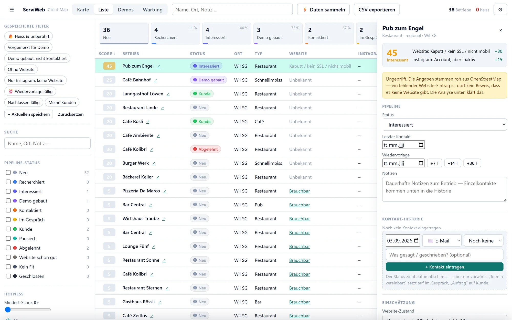
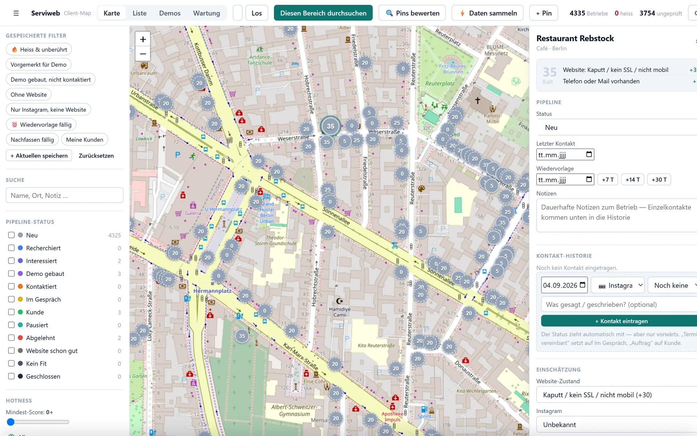
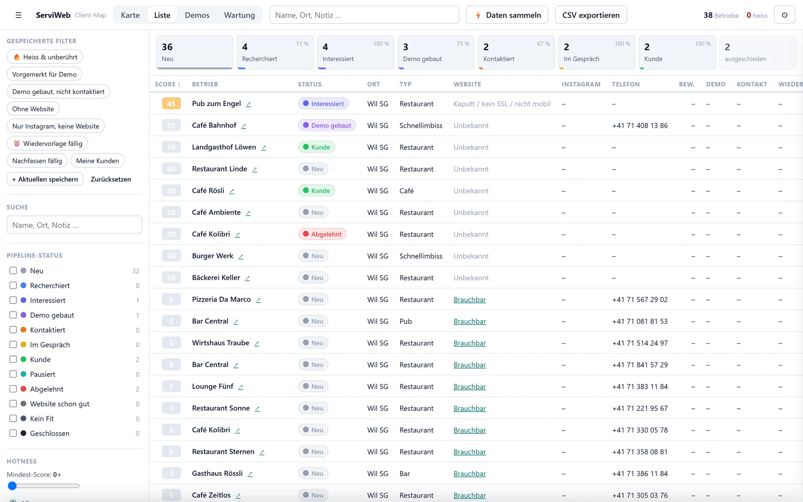
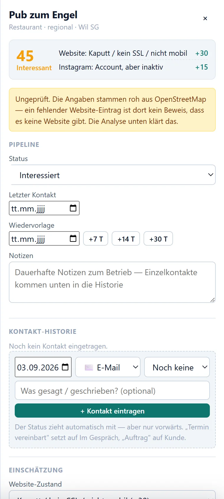
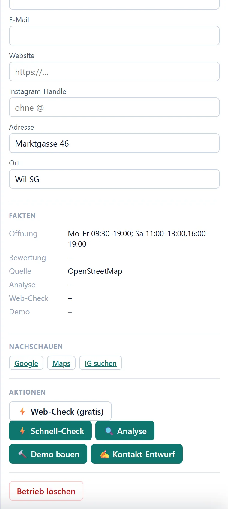

Die Listeist dereinfacheTeil.
Client-Map findet die Gastro-Betriebe in deiner Region, prüft ihre Website und sagt dir, warum sie eine neue braucht. Dann baut es eine Demo-Seite zum Vorzeigen und erinnert dich daran, nachzufassen.
Für Webdesigner in der Schweiz, Deutschland und Österreich. Läuft heute für eine Person; diese Seite entscheidet, ob es ein Produkt wird.
Hundert Betriebe ohne Website kosten zwölf Dollar.
Das ist der Marktpreis für die Liste. Sie löst nur keinen der vier Punkte, an denen Akquise tatsächlich scheitert.
Du exportierst 200 Betriebe. Zwei Wochen später weisst du nicht mehr, wen du schon angeschrieben hast.
Kein Status, keine Historie, kein Datum. Die Tabelle weiss es auch nicht.
„Kein Website-Eintrag" in den Daten heisst nicht „keine Website".
Ein Teil deiner Liste ist längst versorgt. Du merkst es in der Antwort, oder gar nicht.
Die Nachricht ist geschrieben. Der Wirt versteht trotzdem nicht, was du anders machen würdest.
Er hat eine Website. Sie ist alt. Für ihn funktioniert sie. Worte ändern das nicht, eine Demo schon.
Nachfassen passiert nicht, weil nirgends steht, wann.
Die meisten Aufträge kommen beim zweiten oder dritten Kontakt. Der findet nur statt, wenn er irgendwo eingetragen ist.
Vom Kartenausschnitt bis zum unterschriebenen Auftrag.
Keine Mockups. Das sind Bildschirmfotos des laufenden Werkzeugs: Namen und Nummern der Betriebe ersetzt, alles andere echt.
Bereich aufziehen. Jeden Betrieb darin bekommen.
Client-Map holt alle Gastro-Betriebe aus dem Ausschnitt, aus OpenStreetMap, auf Wunsch angereichert über Google Places. Grosse Gebiete werden in Kacheln zerlegt, damit nichts verloren geht.
- Gruppierte Pins zeigen, wo sich die Dichte lohnt
- Gespeicherte Filter: ohne Website, nur Instagram, heiss und unberührt
- Ein erneuter Scan überschreibt nie deine Arbeit
Der Score sagt, wer eine Website braucht, und wer nur so aussieht.
Ein Agent sieht sich Website und Instagram des Betriebs an und vergibt Punkte: keine Website +40, kaputt oder nicht mobil +30, veraltet +20, Instagram aktiv aber ohne Seite +25. Ungeprüft bleibt sichtbar ungeprüft, mit gestricheltem Ring statt Ratespiel.
- Web-Check gratis, Schnell-Check in 30 Sekunden, Tiefen-Analyse als Markdown
- Die Begründung steht neben der Zahl, nicht dahinter versteckt
- Ganze Ausschnitte auf einmal bewerten

Eine Demo-Seite für genau diesen Laden. Das ist das Argument.
Ein Knopf im Betrieb startet den Bau einer echten, vorzeigbaren Website aus der Analyse: Speisekarte, Öffnungszeiten, Bilder, Ton des Hauses. Dazu ein Kontakt-Entwurf für WhatsApp, Instagram oder Mail, der den Wirt beim Namen nennt und auf seine Seite eingeht.
- Die App verschickt nie etwas. Du liest, änderst, schickst selbst
- Demo-Ordner werden Betrieben vorgeschlagen, nie automatisch zugeordnet
- Der Bau läuft in seinem eigenen Ordner, ohne Zugriff auf Kundenprojekte

Der Trichter zeigt, wo es klemmt.
Jeder Kontakt wird eingetragen: Kanal, Ergebnis, was gesagt wurde. Der Status zieht automatisch mit, aber nur vorwärts; ein Kunde wird nie wieder zum Kontaktierten. Die Wiedervorlage steht am Betrieb, mit einem Klick auf +7, +14, +30 Tage.
- Der Trichter zählt kumulativ: so viele haben diese Stufe mindestens erreicht
- Fällige Wiedervorlagen als gespeicherter Filter
- Der CSV-Export enthält exakt das, was auf dem Bildschirm steht

Alles zu einem Laden auf einer Seite.
Das Detail-Panel ist der Ort, an dem du arbeitest. Was darin steht, ist bewusst getrennt: Buchführung oben, Fakten unten, Aktionen ganz unten. Die Ziffern auf den Bildern gehören zur Liste daneben.


45 Punkte: Website kaputt +30, Instagram inaktiv +15. Jeder Punkt hat einen Grund, und der steht daneben.
Der gelbe Hinweis bleibt, bis eine Analyse die Website tatsächlich gesehen hat. Ohne ihn schreibst du Läden an, die längst eine gute Seite haben.
Status, letzter Kontakt, nächster Termin. Eine Frage pro Laden: wann kümmere ich mich wieder darum?
Kanal, Ergebnis, Notiz. „Termin vereinbart" stellt auf Im Gespräch, „Auftrag" auf Kunde. Automatisch, nur vorwärts.
Öffnungszeiten, Quelle, Analyse, Demo. Was der Agent korrigiert, korrigiert er hier, nie in deinen Notizen oder deinem Status.
Web-Check gratis, Schnell-Check, Analyse, Demo bauen, Kontakt-Entwurf. Recherche auf dem günstigen Modell, nur der Demo-Bau auf dem grossen.
Der Demo-Generator ist die Grenze zwischen Solo und Pro.
Geplante Preise in Euro, monatlich kündbar. Nichts davon ist heute buchbar; deshalb der frühe Zugang darunter.
- 25 Leads pro Monat
- Karte und Pipeline
- CSV-Export
- Unbegrenzte Leads
- Website- und Instagram-Bewertung
- Wiedervorlage und Historie
- Alles aus Solo
- Demo-Generator
- Kontakt-Entwürfe
Die Stufe für die Arbeit, die diese Seite beschreibt.
- Mehrere Nutzer
- Geteilte Pipeline
- Gebiete pro Person
Früher Zugang: 19 € im Monat, für immer.
Für die ersten, die vor dem Start bezahlen. Der Preis bleibt, solange du Kunde bleibst, auch wenn Pro später 79 € kostet.
Was du vermutlich wissen willst.
Woher kommen die Daten?
Gibt es das schon, oder ist das eine Idee?
Sind die Betriebe auf den Bildern echt?
Warum nur Gastro?
Wann kann ich es benutzen?
Sag mir, ob ich das bauen soll.
Die Warteliste kostet nichts und verpflichtet zu nichts. Wenn du es wirklich willst, sichere dir den Preis. Das ist die Antwort, auf die ich höre.